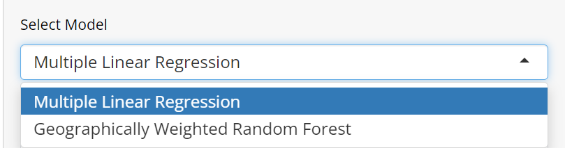

User Guide
Welcome to the user guide! Here, we will be showing you how to use our Shiny App
EDA
The EDA is split into three different tabs here: Kernel Density Estimation, Variable Distribution, Correlation Plot, and Data Table
Kernel Density Estimation

The KDE Plot here will show the distribution of rental units, with price as additional weight, meaning that rental units with higher prices will have an additional weight on the plot.
You can choose which city you want to view through this drop down button. “Select All” means you will be viewing the entire Jakarta.
This slider will be used to select the bandwidth. The default value is 0.5 kilometres.
And the last dropdown button will be used to select the kernel method
Variable Distribution
This tab will show the distribution of different variables in our dataset
To change which variable you want to see, you can use the dropdown on the left
Correlation Plot
The Correlation Plot will show which variables are highly correlated with each other.
Data Table
In this tab, you can use the Data Table to view the entire dataset
Use this dropdown to change how many rows to display in one page
Descriptive Analysis
The Descriptive Analysis section is split into two tabs: Geographically Weighted Regression and Multiple Linear Regression
Geographically Weighted Regression
In this tab, you can see the average values of the coefficient of chosen variables per desa (villages) in Jakarta.
You can choose which variable you want to see the coefficient of using the dropdown on the left
You can choose which variable you want to plot using the dropdown on the left side. There are many other drowdowns as well that you can use to customize the configuration of the GWR model, and see how different configuration affect the coefficient of the chosen variable.
Multiple Linear Regression
In this tab, you can see the summary of the multiple linear regression model. The plot will show you the average value of the coefficient of the chosen variable.
Similar to the GWR tab, you can choose which variable you want to see the coefficient of using the dropdown on the left. However, since MLR is a global model, you can’t see the coefficient of the variable per desa. You can choose to see the average fitted values, actual values, and the residuals per desa.
Predictive Analysis
For the Predictive Analysis section, there are two subsection, the Predicting Price section and the Model Performance section.
Predicting Price
 Users can see the prediction of the monthly rental price of a room in Jakarta. The prediction is based on the input of the user, which includes the type of predictive model that the user wants to use, the address of the rental unit, the gender allowed to stay in the room, the size of the room, and the building year.
Users can see the prediction of the monthly rental price of a room in Jakarta. The prediction is based on the input of the user, which includes the type of predictive model that the user wants to use, the address of the rental unit, the gender allowed to stay in the room, the size of the room, and the building year.

The user can choose between two predictive models, namely Geographically Weighted Random Forest (GWRF) and Multiple Linear Regression (MLR).
The address must be within DKI Jakarta and searchable in OpenStreetMap (OSM) as our data is only within Jakarta and we use the OSM API to geocode. Once the user has inputted all the data, the user can click the “Predict” button to see the predicted price of the rental unit.
The location of the rental unit will also be shown in the map and the predicted price will be shown below the map.
Model Performance
This page will show the selected model performance. The graph that is shown in based on our test dataset. We did an 80-20 train-test split for the MLR model and a 60-40 train-test split for the GWRF. This difference in the split for each model is because of the time taken for the models to train. The user can also see the Mean Absolute Percentage Error (MAPE) of the model below the graph.